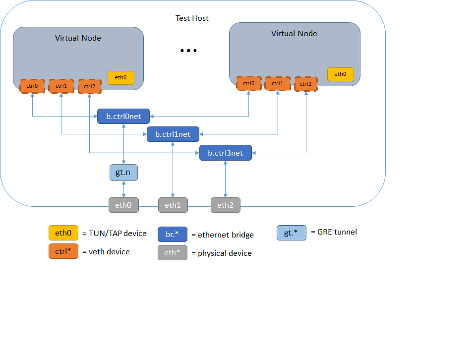

CORE Control Network
Overview
The CORE control network allows the virtual nodes to communicate with their host environment. There are two types: the primary control network and auxiliary control networks. The primary control network is used mainly for communicating with the virtual nodes from host machines and for master-slave communications in a multi-server distributed environment. Auxiliary control networks have been introduced to for routing namespace hosted emulation software traffic to the test network.
Activating the Primary Control Network
Under the Session Menu, the Options... dialog has an option to set a control network prefix.
This can be set to a network prefix such as 172.16.0.0/24. A bridge will be created on the host machine having the last address in the prefix range (e.g. 172.16.0.254), and each node will have an extra ctrl0 control interface configured with an address corresponding to its node number (e.g. 172.16.0.3 for n3.)
A default for the primary control network may also be specified by setting the controlnet line in the /opt/core/etc/core.conf configuration file which new sessions will use by default. To simultaneously run multiple sessions with control networks, the session option should be used instead of the core.conf default.
Note
If you have a large scenario with more than 253 nodes, use a control network prefix that allows more than the suggested /24, such as /23 or greater.
Note
Running a session with a control network can fail if a previous session has set up a control network and the its bridge is still up. Close the previous session first or wait for it to complete. If unable to, the core-daemon may need to be restarted and the lingering bridge(s) removed manually.
# Restart the CORE Daemon
sudo /etc/init.d core-daemon restart
# Remove lingering control network bridges
ctrlbridges=`brctl show | grep b.ctrl | awk '{print $1}'`
for cb in $ctrlbridges; do
sudo ifconfig $cb down
sudo brctl delbr $cb
done
Note
If adjustments to the primary control network configuration made in /opt/core/etc/core.conf do not seem to take affect, check if there is anything set in the Session Menu, the Options... dialog. They may need to be cleared. These per session settings override the defaults in /opt/core/etc/core.conf.
Control Network in Distributed Sessions
When the primary control network is activated for a distributed session, a control network bridge will be created on each of the slave servers, with GRE tunnels back to the master server's bridge. The slave control bridges are not assigned an address. From the host, any of the nodes (local or remote) can be accessed, just like the single server case.
In some situations, remote emulated nodes need to communicate with the host on which they are running and not the master server. Multiple control network prefixes can be specified in the either the session option or /opt/core/etc/core.conf, separated by spaces and beginning with the master server. Each entry has the form "server:prefix". For example, if the servers core1,core2, and core3 are assigned with nodes in the scenario and using /opt/core/etc/core.conf instead of the session option.
controlnet=core1:172.16.1.0/24 core2:172.16.2.0/24 core3:172.16.1.0/24
Then, the control network bridges will be assigned as follows:
- core1 = 172.16.1.254 (assuming it is the master server),
- core2 = 172.16.2.254
- core3 = 172.16.3.254
Tunnels back to the master server will still be built, but it is up to the user to add appropriate routes if networking between control network prefixes is desired. The control network script may help with this.
Control Network Script
A control network script may be specified using the controlnet_updown_script option in the /opt/core/etc/core.conf file. This script will be run after the bridge has been built (and address assigned) with the first argument being the name of the bridge, and the second argument being the keyword "startup". The script will again be invoked prior to bridge removal with the second argument being the keyword "shutdown".
Auxiliary Control Networks
Starting with EMANE 0.9.2, CORE will run EMANE instances within namespaces. Since it is advisable to separate the OTA traffic from other traffic, we will need more than single channel leading out from the namespace. Up to three auxiliary control networks may be defined. Multiple control networks are set up in /opt/core/etc/core.conf file. Lines controlnet1, controlnet2 and controlnet3 define the auxiliary networks.
For example, having the following /opt/core/etc/core.conf:
controlnet = core1:172.17.1.0/24 core2:172.17.2.0/24 core3:172.17.3.0/24
controlnet1 = core1:172.18.1.0/24 core2:172.18.2.0/24 core3:172.18.3.0/24
controlnet2 = core1:172.19.1.0/24 core2:172.19.2.0/24 core3:172.19.3.0/24
This will activate the primary and two auxiliary control networks and add interfaces ctrl0, ctrl1, ctrl2 to each node. One use case would be to assign ctrl1 to the OTA manager device and ctrl2 to the Event Service device in the EMANE Options dialog box and leave ctrl0 for CORE control traffic.
Note
controlnet0 may be used in place of controlnet to configure the primary control network.
Unlike the primary control network, the auxiliary control networks will not employ tunneling since their primary purpose is for efficiently transporting multicast EMANE OTA and event traffic. Note that there is no per-session configuration for auxiliary control networks.
To extend the auxiliary control networks across a distributed test environment, host network interfaces need to be added to them. The following lines in /opt/core/etc/core.conf will add host devices eth1, eth2 and eth3 to controlnet1, controlnet2, controlnet3:
controlnetif1 = eth1
controlnetif2 = eth2
controlnetif3 = eth3
Note
There is no need to assign an interface to the primary control network because tunnels are formed between the master and the slaves using IP addresses that are provided in servers.conf.
Shown below is a representative diagram of the configuration above.
